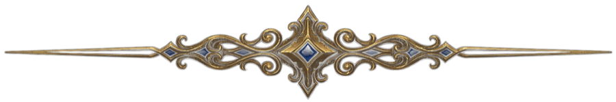
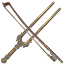

今日の練習に、スタンプを

できたことに印を付けると、カレンダーにスタンプが押されます。1つで銅、3つで銀、5つで金。チェックの候補は、先生と相談して入れ替えていきましょう。
今日の15分
3つ終えたらクエスト達成。疲れた日は1つだけでも進んだことにします。チェックは毎日リセットされ、この端末にだけ残ります。
- 1回15〜20分で十分。長く弾くより、間を空けずに触るほうが上達します。
- 週2日は休む。休みも計画のうち。見込みは休む前提で計算しています。
- 疲れた日は開放弦を2分だけ。それでも今日のクエストは1つ達成です。
- 1週間あいても、やり直しにはならない。前の関門を1回弾いてから戻れば大丈夫です。
教本とレッスンに、道を合わせる
レッスンで合格した教本の番号（No.）を入れると、何％進んだか・いまどの章か・章の期限に間に合うかが出ます。関門は、その章まで進むと挑戦できるようになります。
次のレッスンで先生に聞くこと
Tools
道具箱
練習の道具は、それぞれ別のページです。新しいタブで開くので、このページと行き来できます。
Stage Select
11の関門と、攻略メモ
右のボタンで「未着手 → 練習中 → 通せた → クリア」。「攻略メモ」を開くと、課題・チェックリスト・門番への効き目・目安の週数の調整・メモがあります。
Gatekeepers
城の門を守る、3つの旋律
選んだドヴォルザークの曲を「門番」として並べた一覧です。体力ゲージはクリアに近づくほど減ります。「この門番に効く関門」を先に越えておくと、挑みやすくなります。
Quest Board
目指す曲を、自分で選ぶ
ドヴォルザークの曲と、チェロの名曲をレベル別に並べました。やりたい曲に印を付けると、先にやっておく関門が自動で道に入り、期限までに間に合うかを判定します。
Chronicleドヴォルザークという人Open ▾
村の肉屋の息子から、オーケストラのヴィオラ弾きを経て、世界の作曲家へ。どこにいても故郷ボヘミアの歌を胸に書き続けた人です。

- 1841プラハの北の村ネラホゼヴェスに生まれる。家は肉屋と宿屋。村の楽団でヴァイオリンを覚える。
- 1862プラハの劇場オーケストラでヴィオラを弾きながら、ひそかに作曲を続ける。のちにスメタナがこの楽団の指揮者になる。
- 1878ブラームスの後押しで出版された「スラヴ舞曲集」が大当たりし、一躍有名に。
- 1880門番Ⅲ「我が母の教えたまいし歌」を含む歌曲集「ジプシーの歌」を書く。
- 1893ニューヨークの音楽院の院長として渡米中に、故郷を思いながら門番Ⅰ「家路」の交響曲「新世界より」を書く。
- 1894夏休みにボヘミアへ帰り、門番Ⅱ「ユーモレスク」を含むピアノ曲集を書く。
- 1895チェロ協奏曲 ロ短調を完成。チェロ弾きにとって最高峰の1曲で、この道の「その先」にある曲です。
- 1904プラハで亡くなる。62歳。
郷愁
Homesickness遠いアメリカで故郷を思った「家路」が代表。ゆっくり、弱い音で、遠くを見るように弾きます。
民謡の素朴さ
Bohemian folk村の踊りや歌がもとになった旋律。「ユーモレスク」の弾むリズムは、肩の力を抜いて楽しく。
静かな祈り
Devotion信心深く、家族を大事にした人でした。「我が母」は、声を張らずに温かく歌います。